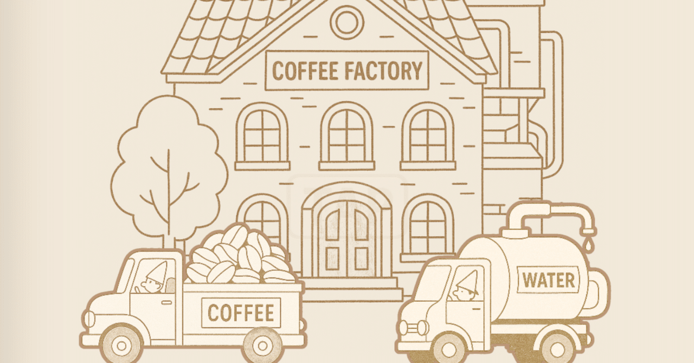
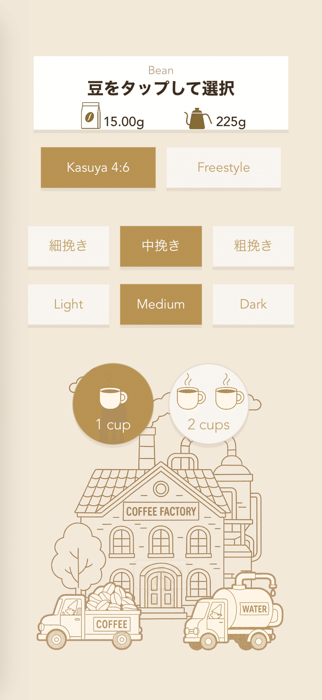
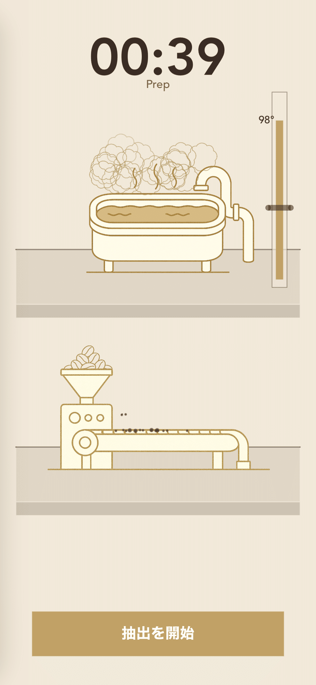
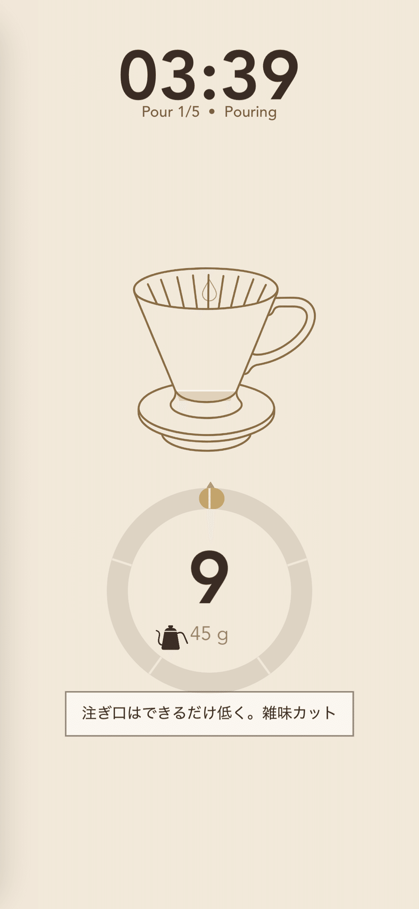
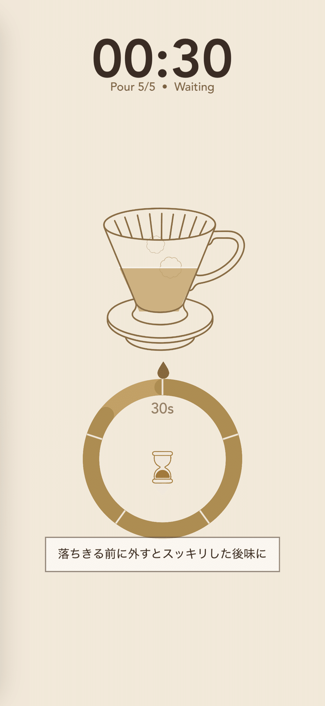
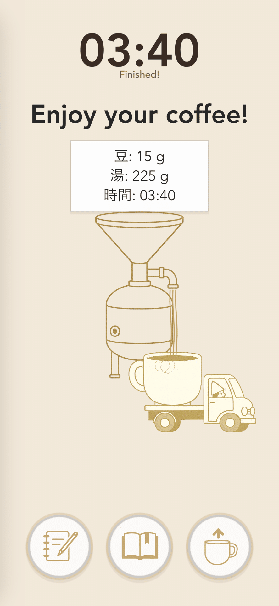

コーヒーが落ちるまでの、静かな時間「CoffeeFactory」（自作アプリ）
職場でコーヒーを淹れて、ほっと一息つくのが至福の時間です。
大切な一杯にこだわりたいので、自分で豆を挽き、ハンドドリップで丁寧に淹れています。
美味しいコーヒーを淹れるためには、「数字」が重要です。
コーヒー豆の量、お湯の量、温度、抽出時間、注ぐタイミング…。
これらが少し変わるだけで味が変わるのが、コーヒーの非常に奥深い魅力です。
ただ、スマホ標準のシンプルなタイマーを睨みながらコーヒーを淹れるのは、
なんだか「仕事」の延長のように感じて、味気ないものでした。
「本格的なコーヒーを淹れたい。
でも、リラックスもしたい。」
そんな矛盾したワガママを叶えるために作ったのが、この 「CoffeeFactory」です。
絵本のような見た目、中身はしっかり

アプリを開くと、こびとが働く小さな工場と、コーヒー豆や水を運ぶトラックがあらわれます。
絵本のような世界観ですが、よく見ると細かい設定が表示されています。
グラム単位での豆やお湯量、豆の挽き具合、焙煎度合いなどが選択でき、有名な「4:6メソッド」にも対応し、
自分のレシピ、抽出の履歴や味のメモも残せるようにしています。
見た目はかわいいですが、機能としては完全にコーヒー愛好者向けの内容です。
※4:6メソッド：粕谷哲氏考案の、初心者でも美味しくコーヒーを淹れられるレシピ

レシピが決まったら、沸いたお湯を適温まで冷ますお風呂と、挽いた豆を運ぶベルトコンベアがあらわれます。
ハンドドリップに集中するためのUI


お湯を注ぐ場面のタイマー表示はお気に入りです。
ハンドドリップでは、「蒸らし」の時間や、一気にお湯を注ぐのではなく「段階抽出」を行うなど、お湯が落ちるのを待つ時間を挟むことで、味に奥行きが出ると言われています。
この少し頭がこんがらがりそうな工程を、ここでは工場の「ドリップ担当」である私が集中できるように、こびとたちは裏に隠れてくれています。
代わりに表示されるのは、分割された円形のメーター。 「何秒で注ぎ、何秒待つか」を直感的に示してくれるので、画面の表示に従うだけで複雑な工程が完了します。
緻密な管理を、楽しい工程へ

ドリップが終わると、
「香りがふわっと広がる瞬間、豆の個性を感じて。」
そんなメッセージと共に、トラックが一杯のコーヒーを出荷していきます。
美味しいコーヒーを作るための、緻密な工程管理。それをストイックな「作業」ではなく、
目で見ても癒やされる「楽しい工程」に変えるための、自分専用のコーヒータイマーです。
これは、誰かに見せるためでも、リリースするためでもなく、ただ自分のために作った、私のiPhoneの中だけにある秘密のアプリたちの記録です。
時間をかけてゆっくり熟成させたい時はこちら▼
樽の中で時間を育てる、正解のない経営ゲーム「AmberTime」（自作アプリ）
ただ時間を眺めたい時はこちら▼